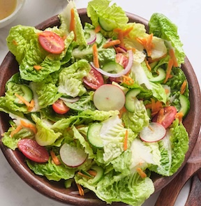

I love to cook, and I want to spread that love with other people (including kids!) who aren't as natural in the kitchen.These recipes are easy, healthy,and super delicous! Enjoy!

| Scrambled Eggs | Banana Pancakes | Grilled Cheese Sanwich | Creamy Tomato Pasta | Turkey Burgers | Calories per serving | Grams of protein per serving | Grams of sugar per serving | Number of Ingredients |
|---|